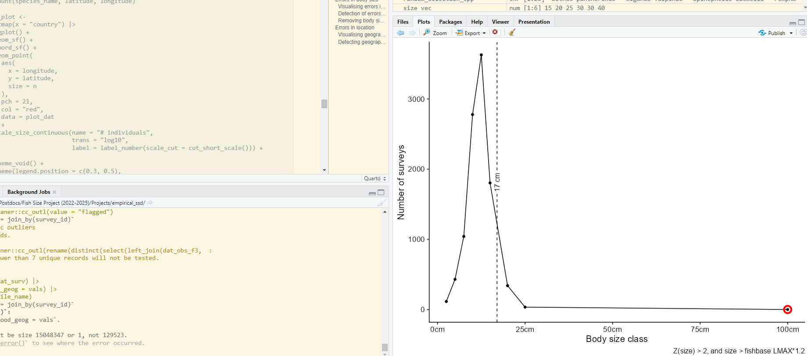
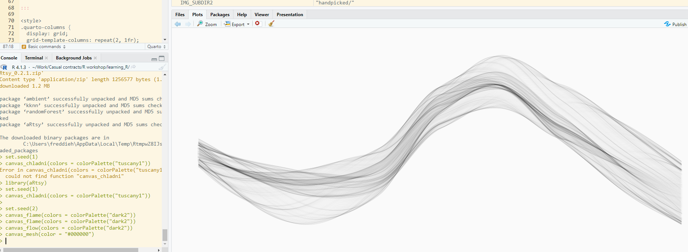
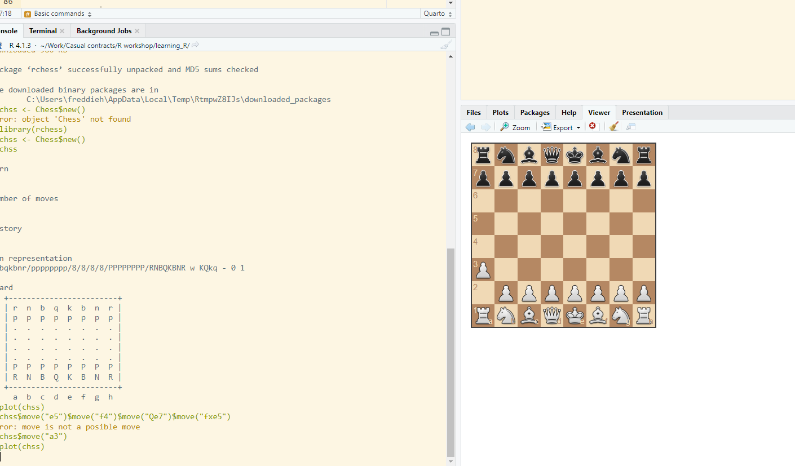
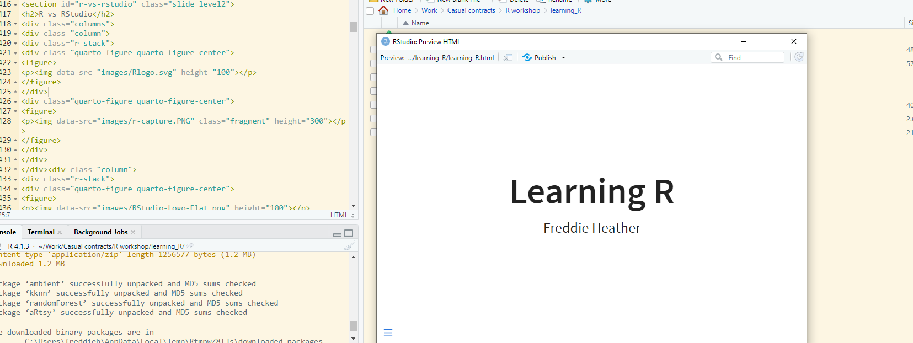
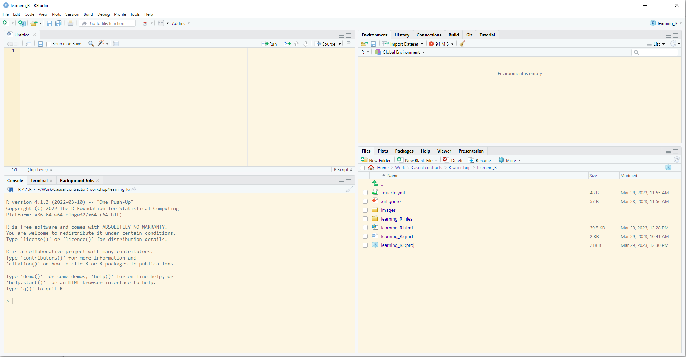
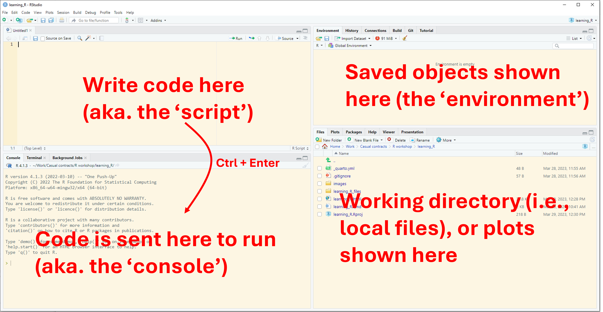

[1] 4Getting started with R
Session 1 of 4: The basics
Freddie Heather
We have a problem
Problem: We are given an excel file with 1M+ rows, with species names, latitude and longitude of occurrence, and we must find errors in a species geographical distribution. The analysis is complicated and involves multiple steps that need to be replicated by others in the future.
Solution: R
Today’s workshop
- We will work through the slides and problems together
- This session is interactive. Please stop me and ask questions.
- By the end of today: you will have learnt how to read in excel data into R, perform import checks, understand R programming basics.
- Tips: be curious, play around, and try and break R (get some Errors)
The background of R
What is R?
- Programming language
- Very popular in scientific data analysis…
- and a lot more
   
R vs RStudio



- The coding language
- (think car engine)
- Download it and forget about it
- User interface
- (think car dashboard)
- Open this when you want to code
Downloading R and RStudio
- R: cran.r-project.org
- RStudio: posit.co/download/rstudio-desktop
Let’s code!
Starting a new analysis
Opening R Studio
R projects
The key to organisational sucess
- Similar to folders on your computers
- R knows exactly where to look for things
Task: Start a new R project - Open RStudio - New Project - New Directory > New Project - Browse location for location of all R projects - Give a good title for the analysis (e.g. “phd_chapter_1”) - avoid spaces and capitals
Creating reproducible code (a script)
- File > New file > R Script
- Write anything (e.g. a comment with your name or title on line 1)
- Save As “analysis.R”
Basic commands
Objects
- An “object” can be anything: a number, a word, a plot, an equation, etc.
- The code to create an object is
<-. This is called the “assignment operator”
Task: Create an object called x and make it equal to 5, and then modify x.
A little more complex
What does z equal?
What does x equal?
Character strings
- Not everything is a number
- Instead of a numeric variable, an object may be a “character string” (aka. a word or sentence)
- The data type (e.g. numeric, character) of the object is called the class.
Object classes
- We can use the appropriately named
class()function to see what the class of an object is
Class is important
- Some functions will only work with certain types of data classes
- E.g. you cannot multiply a numeric variable with character string
Types of classes
| Name | Examples | Syntax |
|---|---|---|
| Numeric | 6.7, 8.9, 1.0 | dbl |
| Character string | “cat”, “dog” | chr |
| Boolean/logical | TRUE, FALSE | lgl |
| Integer | 2, 5, 149 | int |
Classes of vectors
Logic statements
- We can use the
==syntax to see if two things are equal
- Note this is different from using a single equals (
=) =behaves similar to the assignment operator<-, but avoid using it
Packages and functions
What’s a function?
- Task: Using just
+,()and/, calculate the mean of 5, 10, and 3.
- Instead, let’s use the
mean()function to calculate the mean:
meanis the function,xis the argument of the function- functions are always followed by brackets
- we pass
c(5,10,3)to the x argument of the function
Functions
- Some people wrote the code for the
mean()function mean()is a very simple function, but other functions can be extremely complex- Some commonly used functions come readily installed when you install R, others you must download
- Other functions are stored within packages - packages are just a collection of functions
Confused about a function?
- Use the
?functionnamenotation to see information about the function
Packages
- A very commonly installed package is called
readr - This package contains the very useful function
read_csv(), which allows us to read in excel data (in comma-separated-value format, .csv) - To install and load a package:
Pretend to collect data
- Download ‘cape_howe.csv’ from: https://github.com/FreddieJH/r_workshop
- Note it is already in .csv format (see next slide)
- Let’s pretend you went out and collected it
- Save this .csv file in your ‘working directory’
Reading in data
- R does not like excel (.xlsx) files, it loves .csv files
- R has a built-in function to read CSV files:
read.csv() - Because we are working in a project, R knows where to look for the file
- Task: put this into an object and see what the class of the object is
Reading in data (a better way)
- Read the data into R using the
read_csv()function from thereadrpackage
{r, eval=TRUE, echo = FALSE}0 library(readr) read_csv("cape_howe.csv", n_max = 6)
- What class is this object?
Dataframes vs Tibbles
- Very similar in many ways
- A tibble is a “fancy” data.frame
- Note 4 differences in the output of
read.csv()andread_csv()
Check the data imported correctly
The head() function
- First six rows only
# A tibble: 6 × 12
survey_id species_name size_class n_500m2 survey_date site_code depth program
<dbl> <chr> <dbl> <dbl> <date> <chr> <dbl> <chr>
1 2002715 Ophthalmolep… 25 3 2011-04-18 JBMP-S2 10.2 RLS
2 2002715 Pseudolabrus… 7.5 1 2011-04-18 JBMP-S2 10.2 RLS
3 2002715 Pempheris af… 5 2 2011-04-18 JBMP-S2 10.2 RLS
4 2002715 Pempheris af… 7.5 10 2011-04-18 JBMP-S2 10.2 RLS
5 2002715 Pempheris af… 7.5 10 2011-04-18 JBMP-S2 10.2 RLS
6 2002715 Trachinops t… 2.5 65 2011-04-18 JBMP-S2 10.2 RLS
# ℹ 4 more variables: latitude <dbl>, longitude <dbl>, ecoregion <chr>,
# method <dbl>The tail() function
- The final six rows
- Task: Change the
n =argument oftail()- what does this do?
Glimpsing at the data
- Using the
glimpse()function from thedplyrpackage
Rows: 269,123
Columns: 12
$ survey_id <dbl> 2002715, 2002715, 2002715, 2002715, 2002715, 2002715, 200…
$ species_name <chr> "Ophthalmolepis lineolatus", "Pseudolabrus luculentus", "…
$ size_class <dbl> 25.0, 7.5, 5.0, 7.5, 7.5, 2.5, 2.5, 5.0, 5.0, 10.0, 10.0,…
$ n_500m2 <dbl> 3, 1, 2, 10, 10, 65, 65, 110, 110, 71, 71, 2, 5, 5, 6, 6,…
$ survey_date <date> 2011-04-18, 2011-04-18, 2011-04-18, 2011-04-18, 2011-04-…
$ site_code <chr> "JBMP-S2", "JBMP-S2", "JBMP-S2", "JBMP-S2", "JBMP-S2", "J…
$ depth <dbl> 10.2, 10.2, 10.2, 10.2, 10.2, 10.2, 10.2, 10.2, 10.2, 10.…
$ program <chr> "RLS", "RLS", "RLS", "RLS", "RLS", "RLS", "RLS", "RLS", "…
$ latitude <dbl> -35.08, -35.08, -35.08, -35.08, -35.08, -35.08, -35.08, -…
$ longitude <dbl> 150.8, 150.8, 150.8, 150.8, 150.8, 150.8, 150.8, 150.8, 1…
$ ecoregion <chr> "Cape Howe", "Cape Howe", "Cape Howe", "Cape Howe", "Cape…
$ method <dbl> 1, 1, 1, 1, 1, 1, 1, 1, 1, 1, 1, 1, 1, 1, 1, 1, 1, 1, 1, …The View() function in R
- Sometimes you just want an excel-style view of the data
- I use this all the time
- Beware, sometimes you don’t want to view all of your data if there are millions of rows, maybe just the first 100 rows.
- You don’t want to leave this in your script
Tidyverse (modern coding in R)
- We have already installed two packages
readranddplyr - There are some packages that are used so often, they form part of the
tidyverse(a special collection of packages)
- Have a look at https://www.tidyverse.org/
- What are some of the packages within the tidyverse?
Next session:
- Manipulating and cleaning the data
- Today’s slides are available at: https://github.com/FreddieJH/r_workshop